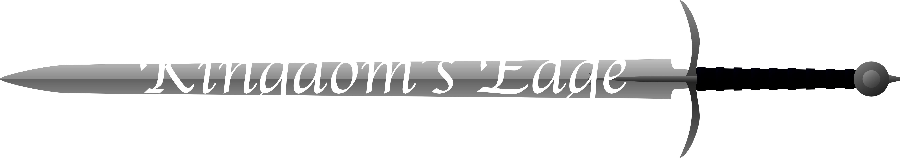

About the Game:
------- How to play -------
Player movements:
Use W, A, S, and D to make your character walk around the screen. Clicking on items near you or walking over them will add them to your inventory.
Inventory:
Click the bag icon in the top right corner of the screen to view your inventory. To drop an item, simply open your inventory up and click on the item you wish to drop. You can only hold 81 items, so be conservative.
Map:
Click the compass in the top left corner of the screen to see a full view of the map. You are the red dot, and Items apear as black dots, people as blue dots, and buildings as white squares.
Turtle Races:
If you go to the building that says "turtle racing here!" and enter it you will be able to bet the gold you have on turtle races. The turtles (eight of them to be exact) start in the middle of a ring and then race to the edge. If you choose the winning turtle you will recive 5 timed the ammount you bet. If you do not choose the winner then the gold you bet is lost.
Created by Mack FitzPatrick (2017)